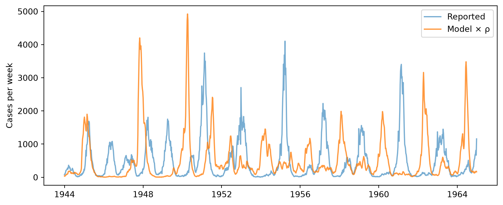

import numpy as np
import pandas as pd
import matplotlib.pyplot as plt
import scipy.stats as sps
import sciris as sc
import starsim as ss
pars = sc.obj(
R0=56.8, sigma=28.9/365.25, gamma=30.4/365.25, mu=0.02/365.25, # Latent and infectious periods of about 12 days; deaths per day
alpha=0.976, iota=2.9, sigma_se=0.0878, # Mixing, imported infections, and the noise
amplitude=0.554, cohort=0.557, # School terms, and the fraction of births entering at school start
rho=0.488, psi=0.116, # Reporting
s0=0.0297, e0=5.17e-5, i0=5.14e-5, # Starting fractions
)
start = ss.date('1943-12-31')
stop = start + ss.days(7*1096) # 1,096 weeks of data
terms = [(7, 100), (115, 199), (252, 300), (308, 356)] # School terms, in days of the year
census = pd.read_csv('../tutorials/data/he2010_london_covariates.tsv', sep='\t') # Days from 1944-01-07; the birth rate is per person per year, lagged four years
cases = pd.read_csv('../tutorials/data/he2010_london_cases.tsv', sep='\t') # Days from the start to the end of each week
data = pd.DataFrame(dict(recovery=cases.weekly_cases.values), index=[start + ss.days(int(t) - 7) for t in cases.time]) # Each week dated by its first day, as Starsim dates a flow
def year(date):
""" The time as He et al. count it: the year, plus the day of the year over 365.25 """
return date.year + date.dayofyear/365.25
census_years = year(ss.date('1944-01-07')) + census.t.values/365.25
def lookup(column, date):
""" The census value in force at a date (each month's value holds until the next) """
i = np.searchsorted(census_years, year(date), side='right') - 1
return census[column].values[max(i, 0)]Measles in London, three ways
Starsim declares most models in a few lines: states, transitions, rates, and the data to fit them to. Sooner or later, though, a model needs something none of these say. This page takes a model with several such parts, the measles model of He, Ionides and King (2010), and writes it in Starsim in three ways:
- Declared, with a little code: the states and transitions declared as usual, with functions of the sim and a small module for the parts that are easiest to write as code.
- Written as code: the whole model as one module, with nothing declared, which can do anything.
- Declared, with noise: the whole model declared, with the noise on infection given by
noise=, so that it runs in the compiled kernels and Starsim’s own particle filter can run it.
Along the way, it gives a likelihood of its own, compiles the coded model’s loop with @ss.jit, and runs Starsim’s particle filter on the declared model, at the published parameters.
This is an advanced case study, and the longest page in the gallery (it takes about a minute to run). To start from the version to use, read The model, then A likelihood of your own and section 3; sections 1 and 2, and compiling, show the alternatives, and Which to use compares all three.
The model
He et al. fitted a stochastic SEIR model to the weekly measles cases reported in London from 1944 to 1965. It is the classic test of methods for fitting stochastic models, and it has four features beyond a plain SEIR model:
- Noise on the rate of infection. Besides the chance of who is infected each day, the force of infection itself varies at random from day to day (“extra-demographic” noise, gamma-distributed with variance σ²).
- Births that enter school together. Most children (55.7%) enter the susceptible pool all at once, on the day school starts in September; the rest enter through the year. The birth rate and the population follow the census.
- School terms. Transmission is higher during the four school terms than in the holidays.
- A measurement model whose spread grows with the cases. Each week’s reported cases are normal, with mean ρC and variance ρC(1 − ρ + ψ²ρC), where C is the number who recovered that week.
The parameters are those the paper estimated. The census and the cases are two small tables:
1. Declared, with a little code
The states, transitions and deaths are declared as usual. The rest is written as functions of the sim, which Starsim calls once a step: the force of infection, which reads the calendar for the school terms, and the births, which on day 251 of the year include the cohort entering school. The noise is a value that changes each step, so it is a few lines of a connector, whose step() draws it before the diseases run; the force of infection reads it. It is one number for the whole population, not a draw for each person, so it uses a NumPy generator seeded from the sim rather than a Starsim distribution: common random numbers pair the draws of individuals between scenarios, and there are none here to pair (see Random numbers). (Section 3 declares all of these instead.)
class Noise(ss.Connector):
""" Gamma noise on the force of infection, with mean 1, drawn once a step """
def __init__(self, sigma_se):
super().__init__(name='noise')
self.var = sigma_se**2*365.25 # The variance of a day's noise
self.value = 1.0
def init_post(self):
super().init_post()
self.rng = np.random.default_rng(self.sim.pars.rand_seed)
def step(self):
self.value = self.rng.gamma(1/self.var, self.var)
def force(sim):
""" The force of infection: school terms, mixing that rises a little more slowly than the number infectious, and the noise """
doy = sim.now.dayofyear
school = any(lo <= doy <= hi for lo,hi in terms)
seas = 1 + pars.amplitude*0.2411/0.7589 if school else 1 - pars.amplitude # The same mean over the year
beta = pars.R0*seas*(1 - np.exp(-(pars.gamma + pars.mu)))
I = sim.diseases.measles.I.n
return ss.perday(beta*(I + pars.iota)**pars.alpha/lookup('pop', sim.now)*sim.connectors.noise.value)
def births(sim):
""" Births per day; on day 251, also the cohort of the year's births entering school """
yearly = lookup('pop', sim.now)*lookup('birthrate', sim.now)
entry = sim.now.dayofyear == 251
return ss.perday(yearly*((1 - pars.cohort)/365.25 + pars.cohort*entry))
def make_measles():
S, E, I, R = ss.states('S E I R')
N0 = lookup('pop', start)
return ss.Disease(
infection = S >> E @ force,
latency = E >> I @ ss.perday(pars.sigma),
recovery = I >> R @ ss.perday(pars.gamma),
births = ss.unborn >> S @ births,
deaths = ss.death(rate=ss.perday(pars.mu)),
init_n = dict(S=round(pars.s0*N0), E=round(pars.e0*N0), I=round(pars.i0*N0)),
name = 'measles',
)
sim = ss.Sim(make_measles(), connectors=Noise(pars.sigma_se), solver='binomial', total_pop=lookup('pop', start),
start=start, stop=stop, dt=ss.days(1), data=data)
sim.run()Sim: measles, 2,464,805 people, as a stochastic compartmental model (chain binomial), 1943-12-31 to 1965-01-01
Note: the initial value of S in "measles" is kept, and the other 2,391,346 people start in R, the only state not given one
Note: run a step at a time, which is much slower than all at once, since noise has a step of its own (a module written as code) Done in 5.1 sSim(n=2464804; 1943-12-31—1965-01-01; diseases=measles; connectors=noise)The model runs as a chain binomial, a stochastic compartmental model. To compare it with the data, the weekly recoveries are scaled by the reporting rate ρ:
weekly = sim.results.measles.recovery.values[:-1].reshape(-1, 7).sum(axis=1) # The steps from days 0-6, 7-13, ..., as the data are (the last step, from the stop, is past the data)
plt.figure(figsize=(10, 4))
plt.plot(data.index, data.recovery, label='Reported', alpha=0.6)
plt.plot(data.index, pars.rho*weekly, label='Model × ρ', alpha=0.8)
plt.ylabel('Cases per week')
plt.legend()
The model’s epidemics come every other year, as London’s did, though not always in the same years: a stochastic model’s timing drifts from the data’s unless it is filtered. describe() shows everything that is declared, and says what is code:
sim.describe()Sim 2 modules, 2,464,805 people, 1943-12-31 to 1965-01-01
| solver | binomial | requested |
| auto would choose: ode (every part of the model has a compartmental form) | ||
| unit | day | from the typed values in the model |
Disease 'measles' 4 states, 5 transitions
| states | S, E, I, R | |
| infected: E, I, R | counted in prevalence, and cured by ss.treat | |
| init: S = 73205 people, E = 127 people, I = 127 people; the rest in R | guessed: R, the only state with no initial value, since S has one | |
| infection | S -> E spontaneous, an acquisition | guessed: acquisition: out of S |
| time in S ~ exponential(rate = force) | ||
| latency | E -> I spontaneous | |
| time in E ~ exponential(rate = 0.0791239 per day) | ||
| recovery | I -> R spontaneous | |
| time in I ~ exponential(rate = 0.0832307 per day) | ||
| births | (added) -> S inflow, in total per day | |
| rate = births | ||
| deaths | S | E | I | R -> (removed) spontaneous | |
| time in S | E | I | R ~ exponential(rate = 5.4757e-05 per day) |
Written as code
| connector | noise (Noise) |
Results and running
| results | S, E, I, R, and one flow per transition | |
| plan | measles: as compiled code, one step at a time, since noise has a step of its own (a module written as code) | |
| noise: in Python, at its place in each step | ||
| schedule | every day: noise, measles |
Notes
| note | unit='day' (from the typed values in the model) | |
| note | the initial value of S in "measles" is kept, and the other 2,391,346 people start in R, the only state not given one | |
| note | run a step at a time, which is much slower than all at once, since noise has a step of its own (a module written as code) |
Per step of measles 1 day
| infection | varies (by group, by person, or in time) | |
| latency | rate 0.07912 per day → p = 1 - exp(-0.07912 × 1) = 0.0761 per step | |
| recovery | rate 0.08323 per day → p = 1 - exp(-0.08323 × 1) = 0.0799 per step | |
| births | varies (by group, by person, or in time) | |
| deaths | rate 5.476e-05 per day → p = 1 - exp(-5.476e-05 × 1) = 0.0001 per step |
What this costs: the functions run in Python once a step, so the run is slower than one compiled call, and Starsim’s particle filter, which runs many copies in the compiled kernels at once, can’t run it. Section 3 declares the same model so that the filter can run it.
2. Written as code
The most direct way is to write the model as one module, in NumPy, with nothing declared. This is He et al.’s own algorithm, line for line (an Euler-multinomial step each day). Its states are arrays with one value for each of n runs, so one sim can also run many copies of the model at once:
class He2010(ss.Module):
""" He et al.'s model, as code: n copies of S, E, I and R, advanced each day by the function euler """
def __init__(self, n=1, euler=None):
super().__init__(name='he2010')
self.n = n
self.euler = euler
def init_post(self):
super().init_post()
self.rng = np.random.default_rng(self.sim.pars.rand_seed)
N0 = lookup('pop', self.sim.t.start)
self.S, self.E, self.I = [np.full(self.n, np.round(N0*x)) for x in [pars.s0, pars.e0, pars.i0]]
self.C = np.zeros(self.n) # Recoveries in the last step
self.recoveries = []
def step(self):
p, now = pars, self.now
pop = lookup('pop', now)
yearly = pop*lookup('birthrate', now)
births = np.round(yearly*((1 - p.cohort)/365.25 + p.cohort*(now.dayofyear == 251)))
seas = 1 + p.amplitude*0.2411/0.7589 if any(lo <= now.dayofyear <= hi for lo,hi in terms) else 1 - p.amplitude
beta = p.R0*seas*(1 - np.exp(-(p.gamma + p.mu)))
var = p.sigma_se**2*365.25
noise = self.rng.gamma(1/var, var, self.n)
rates = (p.iota, p.alpha, p.sigma, p.gamma, p.mu)
self.C = self.euler(self.S, self.E, self.I, beta, pop, births, noise, self.rng, rates)
self.recoveries.append(self.C.mean())
def euler_step(S, E, I, beta, pop, births, noise, rng, rates):
""" One day for each copy: who leaves S, E and I, and where to (the rest die) """
iota, alpha, sigma, gamma, mu = rates
foi = beta*(I + iota)**alpha/pop*noise
out = []
for n,rate in [(S, foi), (E, sigma), (I, gamma)]:
leaving = rng.binomial(n.astype(np.int64), 1 - np.exp(-(rate + mu)))
out.append((rng.binomial(leaving, rate/(rate + mu)), leaving))
(inf, nS), (lat, nE), (rec, nI) = out
S += births - nS
E += inf - nE
I += lat - nI
return rec
def make_coded(n=1, euler=euler_step, **kwargs):
return ss.Sim(modules=He2010(n, euler), start=start, stop=stop, dt=ss.days(1), verbose=0, **kwargs)
sims = ss.parallel([make_coded(rand_seed=seed) for seed in range(6)]).sims
totals = [pars.rho*np.sum(s.custom.he2010.recoveries) for s in sims]
print(f'Reported cases over 21 years: {np.mean(totals):,.0f} ± {np.std(totals):,.0f}')Reported cases over 21 years: 539,594 ± 7,455The module keeps nothing for each person, so the sim has no agents: Starsim calls its step() once a day, and gives it the dates, seeds, and parallel runs. What it can’t do is show what the module does, run it under another solver, or fit it with sim.fit(), since there is nothing declared to fit.
A likelihood of your own
He et al.’s measurement model is a normal whose variance grows with the mean, which isn’t one of Starsim’s likelihoods. Any likelihood can be given as a function of the data and the model’s values, returning the log-likelihood of each. Here, as in the paper, it is the chance of the reported number rounded to a whole case:
def reported(observed, recovered):
""" The log-likelihood of the reported cases, given the recoveries """
m = pars.rho*recovered
sd = np.sqrt(m*(1 - pars.rho + pars.psi**2*m)) + 1e-18
lik = np.where(observed > 0, sps.norm.cdf(observed + 0.5, m, sd) - sps.norm.cdf(observed - 0.5, m, sd), sps.norm.cdf(0.5, m, sd))
return np.log(lik + 1e-18)
ss.fitting.loglik(sim, likelihood=dict(recovery=reported))-31485.821261718982The function can be given wherever a distribution is: on an outcome (ss.outcome(..., likelihood=reported)), to sim.fit(likelihood=...), and to the particle filter. For a single stochastic run, the log-likelihood is low, since its epidemics are not in step with the data; a particle filter (below) measures the fit properly.
Compiling the coded model
@ss.jit compiles a function with Numba, with no change to what it does. Here is the step above as a loop over the copies:
@ss.jit
def euler_loop(S, E, I, beta, pop, births, noise, rng, rates):
""" The same as euler_step(), one copy at a time """
iota, alpha, sigma, gamma, mu = rates
rec = np.zeros(len(S))
for i in range(len(S)):
foi = beta*(I[i] + iota)**alpha/pop*noise[i]
nS = rng.binomial(int(S[i]), 1 - np.exp(-(foi + mu)))
nE = rng.binomial(int(E[i]), 1 - np.exp(-(sigma + mu)))
nI = rng.binomial(int(I[i]), 1 - np.exp(-(gamma + mu)))
inf = rng.binomial(nS, foi/(foi + mu))
lat = rng.binomial(nE, sigma/(sigma + mu))
rec[i] = rng.binomial(nI, gamma/(gamma + mu))
S[i] += births - nS
E[i] += inf - nE
I[i] += lat - nI
return rec
make_coded(euler=euler_loop).run() # The first run compiles it
for label,euler in [('NumPy', euler_step), ('Compiled', euler_loop)]:
T = sc.timer()
make_coded(euler=euler).run()
T.toc(f'One run, {label}') Compiling euler_loop() with Numba, estimated time: 1-10 s Compiled euler_loop() with Numba in 2.2 sOne run, NumPy: 2.43 s
One run, Compiled: 1.39 sThe first call compiles it, once; after that it is loaded from Numba’s cache. Compiling pays off most for loops that NumPy can’t write as whole arrays. A function that Numba can’t compile is an error, which says why; @ss.jit(nopython=False) runs it as Python instead.
3. Declared, with noise
Each of the four features can also be declared, so that nothing in the model is Python run once a step:
- The noise is
noise=on the transition of infection: gamma white noise on its rate, as pomp’srgammawn(), drawn for each step by the chain binomial. Its σ is in the square root of the sim’s unit, here a day, so He et al.’s 0.0878 per square root of a year is multiplied by √365.25. - The school terms, the census and the births are known in advance, so they are time series with a value for each day (
ss.timeseries()), worked out once from the same tables: the rate of infection, with the school terms and the population folded in, and the births, with the cohort on day 251. The births are an inflow fromss.unborn, so under the chain binomial the cohort is drawn as a random number around its size rather than added exactly, which at London’s size makes no visible difference. - The measurement model is the likelihood
reported()above.
dates = [start + ss.days(d) for d in range(7*1096 + 1)] # Every day of the run
days = np.array([date.day_of_year for date in dates])
pop = np.array([lookup('pop', date) for date in dates])
school = np.array([any(lo <= day <= hi for lo,hi in terms) for day in days])
seas = np.where(school, 1 + pars.amplitude*0.2411/0.7589, 1 - pars.amplitude)
beta = pars.R0*seas*(1 - np.exp(-(pars.gamma + pars.mu)))/pop # Per day, per (I + iota)^alpha
daily_births = pop*np.array([lookup('birthrate', date) for date in dates])*((1 - pars.cohort)/365.25 + pars.cohort*(days == 251)) # Per day, with the cohort on day 251
S, E, I, R = ss.states('S E I R')
measles = ss.Disease(
infection = ss.Transition(S, E, rate=ss.perday(ss.timeseries(dates, beta))*(I.n + pars.iota)**pars.alpha, noise=pars.sigma_se*np.sqrt(365.25)), # σ per square root of a day
latency = E >> I @ ss.perday(pars.sigma),
recovery = I >> R @ ss.perday(pars.gamma),
births = ss.unborn >> S @ ss.perday(ss.timeseries(dates, daily_births)),
deaths = ss.death(rate=ss.perday(pars.mu)),
init_n = dict(S=round(pars.s0*pop[0]), E=round(pars.e0*pop[0]), I=round(pars.i0*pop[0])),
name = 'measles',
)
declared = ss.Sim(measles, solver=ss.solvers.binomial(substeps=1), total_pop=pop[0], start=start, stop=stop, dt=ss.days(1), data=data, verbose=0)
declared.init()
ss.fitting.ParticleFilter.reason(declared) # Why the filter can't run the sim: None, since the kernels run it wholesubsteps=1 takes each day whole, with a chance of 1 − exp(−rate·dt) on every exit, as He et al.’s Euler-multinomial step does. declared.describe() shows the noise under the transition of infection. Starsim’s particle filter, ss.fitting.ParticleFilter, takes the sim and the likelihood, and gives an estimate of the log-likelihood for a number of particles and a seed:
filt = ss.fitting.ParticleFilter(declared, likelihood=dict(recovery=reported))
print(f'Log-likelihood: {filt(n_particles=200, rand_seed=0):,.1f}')Log-likelihood: -5,910.4The filter runs many copies of the model (the particles) and, at each week of data, weights each by how likely the reported cases are under it, then draws the copies again in proportion to their weights, so that those that have drifted from the data are dropped. That is with 200 particles, to keep this page quick. With so few, the estimate is noisy, and tends to be too low: the filter’s estimate of the likelihood is unbiased, but the log of it is biased downward, more so with fewer particles. With 2,000 particles, ten filters give −5,816.7 ± 11.5, against −5,827.4 from pomp, the R package He et al. used; without the noise, they give about −13,000, so the noise is what lets the published values fit. It is the filter that sim.fit() uses for IF2 (method='if2') and particle MCMC (method='pmcmc'), so the declared model can be fitted with them: give a rate to fit bounds, e.g. I >> R @ ss.par(ss.perday(pars.gamma), bounds=[0.05, 0.12]) (here R0 and the school terms are folded into the time series, so they stay fixed). The noise is drawn only by the chain binomial: the ODE leaves it out (and says so), and the other solvers refuse it.
Which to use
| What you write | What Starsim still does | What is given up | |
|---|---|---|---|
| Declared, with a little code | Functions of the sim; a connector for a value that changes each step | describe(), results, solvers that can take the code, outcomes and likelihoods |
Speed (a step at a time), and the built-in particle filter, IF2 and particle MCMC |
| Written as code | A module with step() |
Time, seeds, parallel runs, results you record | Everything about the model’s structure: describe(), other solvers, sim.fit() |
| Declared, with noise | Transitions with noise=, and time series worked out in advance |
Everything: describe(), the whole run in the kernels, the built-in particle filter, IF2 and particle MCMC |
The exact (Gillespie) solver, which refuses the noise, and anything that isn’t known in advance or declared |
A likelihood of your own (fn(observed, model)) gives up only gradients in JAX. Start declared, and write as code only the part that needs it.
Going further
- T8 – Custom modules teaches writing modules as code, as compartments and as agents.
- Custom modules in the user guide covers the options, including
@ss.jit; Fitting a model covers likelihoods and the particle filter. - He D, Ionides EL, King AA (2010). Plug-and-play inference for disease dynamics: measles in large and small populations as a case study. Journal of the Royal Society Interface 7: 271–283.
- pomp: measles in England and Wales, the same model fitted with the R package pomp.